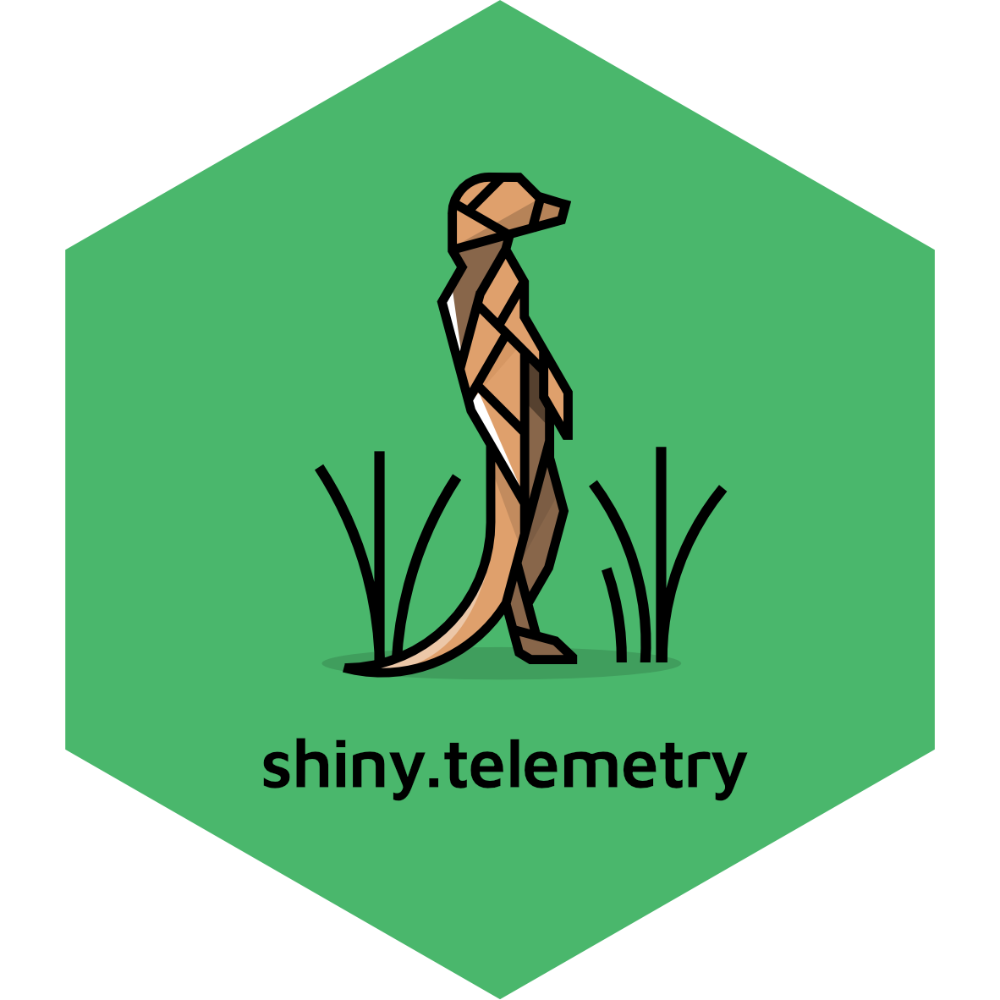

shiny.telemetry 
Easy logging of users activity and session events of your Shiny App


The shiny.telemetry R package tracks events occurring on a user session, such as input changes and session duration, and stores them in a local or remote database.
It provides developers with the tools to help understand how users interact with Shiny dashboards and answer questions such as: which tabs/pages are more often visited, which inputs users are changing, what is the average length of a session, etc.
Install
The shiny.telemetry package can be installed from GitHub by using the remotes package:
remotes::install_github("Appsilon/shiny.telemetry", dependencies = TRUE)With dependencies = TRUE the suggested packages (required to run some examples) will be installed in addition to mandatory dependencies.
How to use in a Shiny Dashboard?
shiny.telemetry allows for a minimal setup with only 3 commands that can track some information about the session:
- When session starts and ends
- The browser version used by the client
- Changes in the inputs (doesn’t track values by default)
The code below runs a minimal example of a Shiny application that uses shiny.telemetry. The package will keep track of the session information and all changes to the numericInput.
Note: When using the dashboard nothing is happening from the user’s perspective as all operation run in the background (either in the server or in Javascript).
library(shiny)
library(shiny.telemetry)
telemetry <- Telemetry$new() # 1. Initialize telemetry with default options
shinyApp(
ui = fluidPage(
use_telemetry(), # 2. Add necessary javascript to Shiny
numericInput("n", "n", 1),
plotOutput('plot')
),
server = function(input, output) {
telemetry$start_session() # 3. Minimal setup to track events
output$plot <- renderPlot({ hist(runif(input$n)) })
}
)When inspecting the code above, we can breakdown the 3 lines of code by:
- Global
Telemetryobject that is used across the different sessions - Add necessary Javascript to the UI by calling
use_telemetry(). It is used to track browser version. - Initialize the session-specific tracking by calling method
start_session()of theTelemetryobject.
How to access the data?
The developers and administrators of the dashboard can access the data that is gathered by shiny.telemetry via a Telemetry object or directly from DataStorage via the appropriate provider.
# After running the instrumented app
shiny.telemetry::Telemetry$new()$data_storage$read_event_data("2020-01-01", "2050-01-01")
# Default provider and path for Telemetry$new()
shiny.telemetry::DataStorageSQLite$new(db_path = "telemetry.sqlite")$read_event_data("2020-01-01", "2050-01-01")The package includes an analytics dashboard to view the data. It is located at inst/examples/app/analytics and it should be modified so that it references the correct DataStorage provider and configuration.
Data providers
There are 3 different types of data providers that can range from local filesystem storage to a remote Plumber REST API instance.
- Local file:
- SQLite using
DataStorageSQLiteclass - Plain text file using
DataStorageLogFileclass
- SQLite using
- Remote SQL database:
- MariaDB using
DataStorageMariaDBclass - PostgreSQL using
DataStoragePostgreSQLclass - MS SQL Server using
DataStorageMSSQLServerclass
- MariaDB using
- Plumber REST API using
DataStoragePlumberclass- In turn, the Plumber data provider will use one of the other classes above as the method of data storage.
The setup for plumber requires a valid Plumber instance running on the network and the communication can be protected. See Plumber deployment documentation for more information.
Debugging the Telemetry calls
The package uses the logger package internally with the shiny.telemetry namespace. To debug the shiny.telemetry calls in the dashboard, change the threshold of this namespace to DEBUG:
logger::log_threshold("DEBUG", namespace = "shiny.telemetry")note: This command can be run before the Shiny call or by adding it to the .Rprofile.
Contributing
See CONTRIBUTING.
Appsilon

Appsilon is a Posit (formerly RStudio) Full Service Certified Partner.
Learn more at appsilon.com.
Get in touch opensource@appsilon.com
Explore the Rhinoverse - a family of R packages built around Rhino!